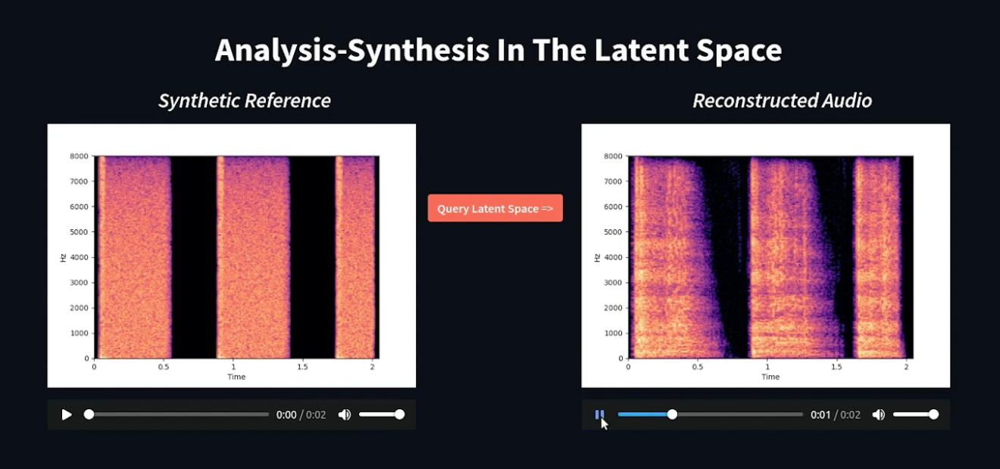

Controllable Audio Generation
Methods for controllable synthesis and perceptual morphing of environmental sounds and audio textures.

Problem
Generative models for audio textures and environmental sounds have advanced rapidly, but they typically offer limited control over the perceptual qualities of the output. A composer designing a soundscape, a game audio designer morphing between ambient environments, or a researcher studying auditory perception all need fine-grained control over attributes such as roughness, brightness, density, and temporal evolution — not just the ability to generate a plausible sound from a text prompt.
Furthermore, evaluating generated audio is challenging. Standard metrics borrowed from image generation (e.g., Fréchet distances) are not well-calibrated for perceptual similarity in audio, making it difficult to systematically compare synthesis methods or measure progress in the field.
Our Approach
We developed a suite of methods addressing both controllable synthesis and perceptual evaluation of audio textures. Our work spans three main contributions:
Controllable Texture Morphing: We introduced a framework for smooth, controllable perceptual morphing between audio textures. Given two example sounds, the system can generate a continuous spectrum of intermediate textures, allowing creators to blend acoustic environments and explore the perceptual space between them.
Example-Based Perceptual Generation: We developed an example-driven audio texture synthesis system that allows users to guide generation using perceptual reference sounds. Unlike text-driven systems, this approach directly encodes the target perceptual qualities from an audio example, giving more precise control over the output's timbre and texture.
Perceptual Evaluation Metrics: We conducted a systematic study of deep-feature-based evaluation metrics for audio textures, identifying which metric configurations best capture human perceptual similarity judgements. These findings inform best practices for evaluating generative audio systems.
Related Publications
-
ICASSP 2025
-
IEEE/ACM Transactions on Audio, Speech, and Language Processing (TASLP), 2023
-
ICASSP 2023 (*equal contributors)
-
ISMIR 2022
-
SMC 2021